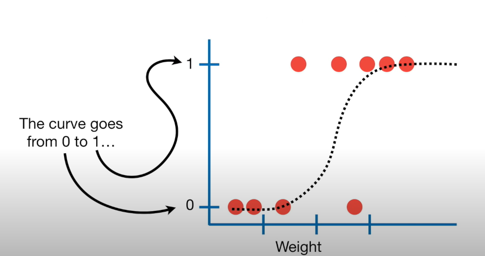
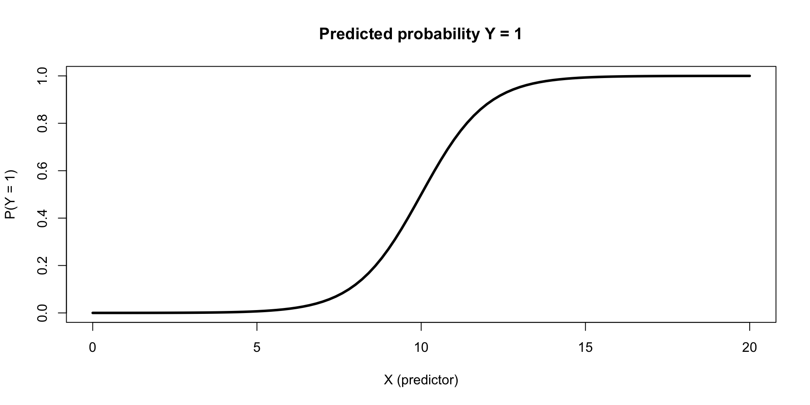

rate_util_home_fit <- linear_reg() |>
fit(interest_rate ~ credit_util + homeownership, data = loans)Logistic regression
Lecture 19
Warm up
While you wait for class to begin…
Any questions from prepare materials?
Duke Community Standard
Duke University is a community dedicated to scholarship, leadership, and service and to the principles of honesty, fairness, respect, and accountability. Citizens of this community commit to reflect upon and uphold these principles in all academic and nonacademic endeavors, and to protect and promote a culture of integrity.
To uphold the Duke Community Standard:
- I will not lie, cheat, or steal in my academic endeavors;
- I will conduct myself honorably in all my endeavors; and
- I will act if the Standard is compromised.
https://trinity.duke.edu/undergraduate/academic-policies/community-standard-student-conduct
Duke Community Standard
“Duke University has high expectations for students’ scholarship and conduct. In accepting admission, students indicate their willingness to subscribe to and be governed by the rules and regulations of the university, which flow from the Duke Community Standard. These policies reflect the Duke Community Standard’s fundamental values—honesty, fairness, respect, and accountability. Undergraduates acknowledge the right of the university to take disciplinary action, including suspension or expulsion, for failure to abide by the regulations or for other conduct adjudged unsatisfactory or detrimental to the university community. Students and groups may be held accountable for any violation of university policy that may or may not be included in this guide, whether on or off campus.”
https://trinity.duke.edu/undergraduate/academic-policies/community-standard-student-conduct
Basic guidelines
Be a Good Human
Use electronic devices for things related to coursework only and in a way that does not distract your classmates
No videos on cell phones
No phone calls!
Take off your headphones
- If you need an accommodation for wearing headphones in class, reach out to SDAO to get this offcially approved
Keep chatter to “your turn” portions or limited to clarification questions
If you have a guest in class, make sure they are aware of the DCS and take responsibility for their behaviour
Announcements
Peer eval 2 is due Sunday night, results will be published on Monday
Lab 6 is due on Monday:
Render your document. If your code is running off the page so we can’t see your entire code, we will not evaluate any of it. The question will automatically receive a 0. This is something you can and should verify before you turn in your work.
If you’re using functions that are not introduced in the course materials, you must cite your sources. Failure to do so is a violation of the Duke Community Standard and will be treated as such.
Lab 7 will cover material from this week and next week. Start to working through prepare materials between now and Monday.
From last time
Recap: ae-13-modeling-loans
What is the practical difference between a model with parallel and non-parallel lines?
What is the definition of R-squared?
Why do we choose models based on adjusted R-squared and not R-squared?
Predict interest rate…
from credit utilization and homeownership
tidy(rate_util_home_fit)# A tibble: 4 × 5
term estimate std.error statistic p.value
<chr> <dbl> <dbl> <dbl> <dbl>
1 (Intercept) 9.93 0.140 70.8 0
2 credit_util 5.34 0.207 25.7 2.20e-141
3 homeownershipMortgage 0.696 0.121 5.76 8.71e- 9
4 homeownershipOwn 0.128 0.155 0.827 4.08e- 1Intercept
# A tibble: 4 × 5
term estimate std.error statistic p.value
<chr> <dbl> <dbl> <dbl> <dbl>
1 (Intercept) 9.93 0.140 70.8 0
2 credit_util 5.34 0.207 25.7 2.20e-141
3 homeownershipMortgage 0.696 0.121 5.76 8.71e- 9
4 homeownershipOwn 0.128 0.155 0.827 4.08e- 1- Intercept: Loan applicants who rent and have 0 credit utilization are predicted to receive an interest rate of 9.93%, on average.
Slopes
# A tibble: 4 × 5
term estimate std.error statistic p.value
<chr> <dbl> <dbl> <dbl> <dbl>
1 (Intercept) 9.93 0.140 70.8 0
2 credit_util 5.34 0.207 25.7 2.20e-141
3 homeownershipMortgage 0.696 0.121 5.76 8.71e- 9
4 homeownershipOwn 0.128 0.155 0.827 4.08e- 1All else held constant, for each additional percent credit utilization is higher, interest rate is predicted to be higher, on average, by 0.0534%.
All else held constant, the model predicts that loan applicants who have a mortgage for their home receive 0.696% higher interest rate than those who rent their home, on average.
All else held constant, the model predicts that loan applicants who own their home receive 0.128% higher interest rate than those who rent their home, on average.
Transformations
Predict log(interest rate)
rate_log_cc_fit <- linear_reg() |>
fit(log(interest_rate) ~ credit_checks, data = loans)
tidy(rate_log_cc_fit)# A tibble: 2 × 5
term estimate std.error statistic p.value
<chr> <dbl> <dbl> <dbl> <dbl>
1 (Intercept) 2.39 0.00512 468. 0
2 credit_checks 0.0236 0.00166 14.2 2.39e-45Model
# A tibble: 2 × 5
term estimate std.error statistic p.value
<chr> <dbl> <dbl> <dbl> <dbl>
1 (Intercept) 2.39 0.00512 468. 0
2 credit_checks 0.0236 0.00166 14.2 2.39e-45. . .
\[ \widehat{log(interest~rate)} = 2.39 + 0.0236 \times credit~checks \]
Slope
# A tibble: 2 × 5
term estimate std.error statistic p.value
<chr> <dbl> <dbl> <dbl> <dbl>
1 (Intercept) 2.39 0.00512 468. 0
2 credit_checks 0.0236 0.00166 14.2 2.39e-45. . .
For each additional credit check, log of interest rate is predicted to be higher, on average, by 0.0236%.
Slope
\[ log(interest~rate_{x+1}) - log(interest~rate_{x}) = 0.0236 \]
. . .
\[ log(\frac{interest~rate_{x+1}}{interest~rate_{x}}) = 0.0236 \]
. . .
\[ e^{log(\frac{interest~rate_{x+1}}{interest~rate_{x}})} = e^{0.0236} \]
. . .
\[ \frac{interest~rate_{x+1}}{interest~rate_{x}} = 1.024 \]
. . .
For each additional credit check, interest rate is predicted to be higher, on average, by a factor of 1.024.
Logistic regression
What is logistic regression?
Similar to linear regression…. but
Modeling tool when our response is categorical

Modelling binary outcomes
Variables with binary outcomes follow the Bernouilli distribution:
\(y_i \sim Bern(p)\)
\(p\): Probability of success
\(1-p\): Probability of failure
We can’t model \(y\) directly, so instead we model \(p\)
Linear model
\[ p_i = \beta_o + \beta_1 \times X_1 + \cdots + \epsilon \]
But remember that \(p\) must be between 0 and 1
We need a link function that transforms the linear model to have an appropriate range
Logit link function
The logit function take values between 0 and 1 (probabilities) and maps them to values in the range negative infinity to positive infinity:
\[ logit(p) = log \bigg( \frac{p}{1 - p} \bigg) \]
This isn’t exactly what we need though…..
Recall, the goal is to take values between -\(\infty\) and \(\infty\) and map them to probabilities.
We need the opposite of the link function… or the inverse
Taking the inverse of the logit function will map arbitrary real values back to the range [0, 1]
Generalized linear model
- We model the logit (log-odds) of \(p\) :
\[ logit(p) = log \bigg( \frac{p}{1 - p} \bigg) = \beta_o + \beta_1 \times X1_i + \cdots + \epsilon \]
- Then take the inverse to obtain the predicted \(p\):
\[ p_i = \frac{e^{\beta_o + \beta_1 \times X1_i + \cdots + \epsilon}}{1 + e^{\beta_o + \beta_1 \times X1_i + \cdots + \epsilon}} \]
A logistic model visualized

Takeaways
Generalized linear models allow us to fit models to predict non-continuous outcomes
Predicting binary outcomes requires modeling the log-odds of success, where p = probability of success